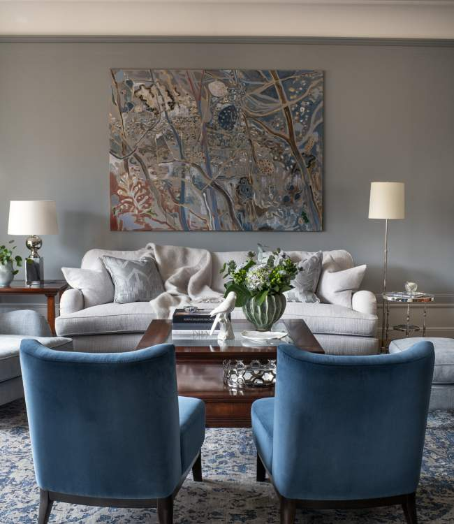

Portfolio Östermalm Pied-à-terre

Östermalm Pied-à-terre
A turn-key delivery of a grand "pied a terre" apartment in the heart of Stockholm where we focused on exclusive handknotted rugs throughout, luxurious textiles in soft green and blue tones and comfortable custom made upholstery combined with the clients love of a few mahogany pieces from his previous home.